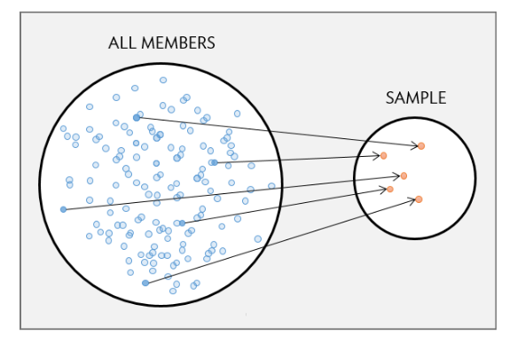
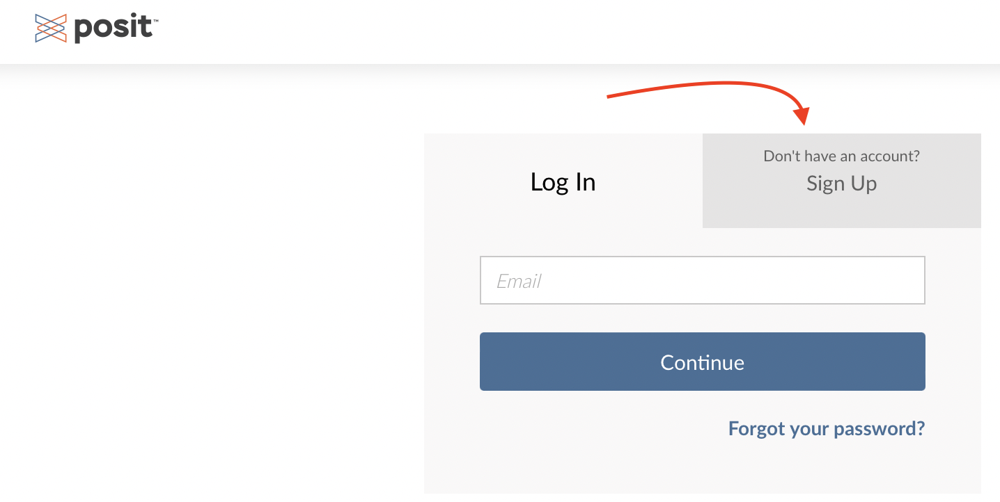
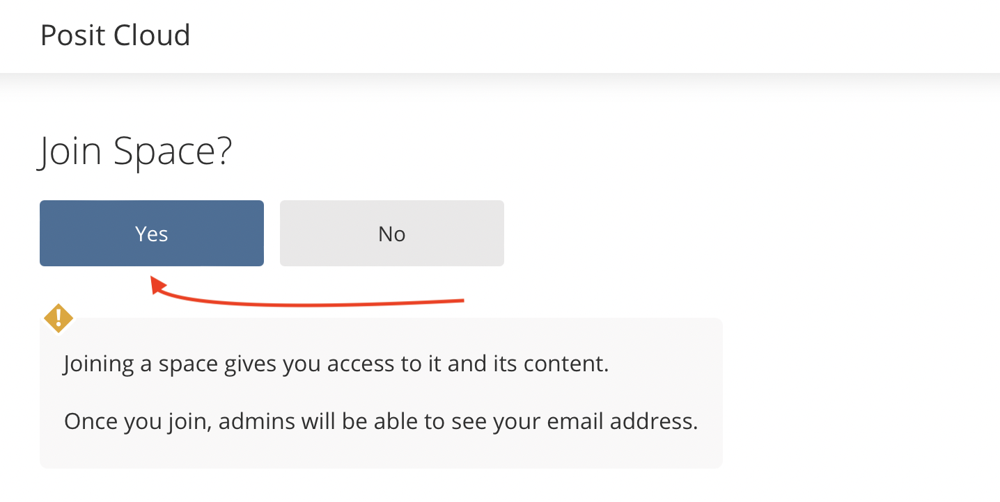
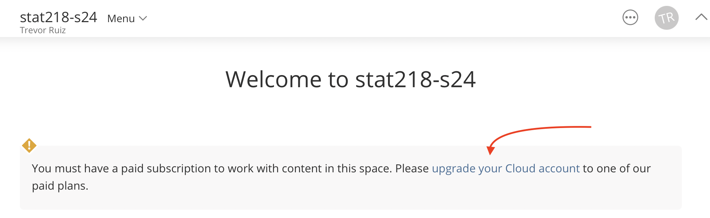
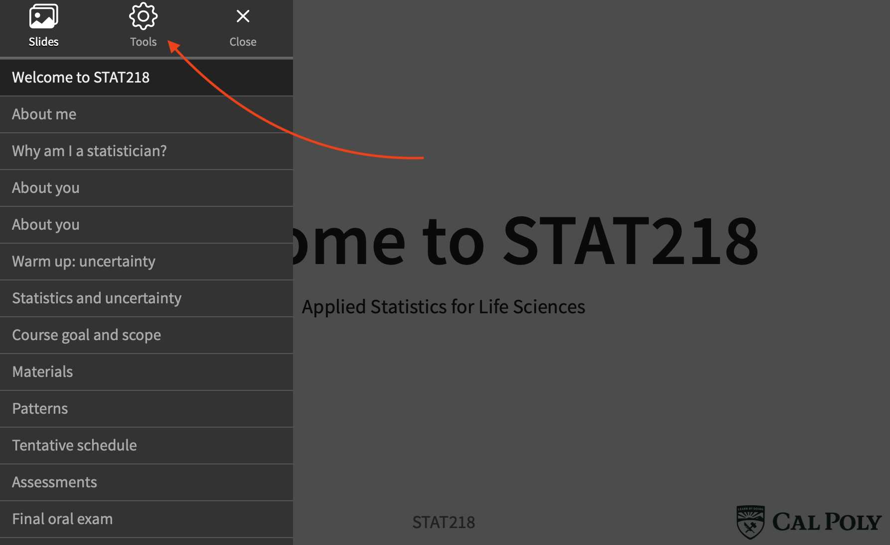

flowchart TD A(unobserved variable) --- B(study variable) & C(study outcome)
Welcome to STAT218
Applied Statistics for Life Sciences
Today’s agenda
- Course logistics
- [lecture] Study designs
- [activity, if time] Distinguishing study types
Course logistics
Icebreakers
By show of hands…
- First statistics class ever?
- Last statistics class ever?
- Expect to take STAT313?
- Expect to use statistics for your degree coursework or senior project?
- Considering a statistics or data science minor?
Class composition
By the numbers…

Statistics and uncertainty
Life is full of uncertainty, and this can make a lot of questions hard to answer, because similar situations do not always result in the same outcome.
Statistical thinking: uncertainty is measurable.
What statistics can offer:
- principles for designing studies and collecting data in order to capture outcome variability
- data analytic tools to distinguish random from systematic variability
- heuristics to make inferences that account for uncertainty
Course goal and scope
The overarching goal of 218 is to introduce you to statistics in a hands-on way that is relevant to your major.
So we will focus on:
- statistical thinking, study design, and data analysis
- classical methods, mostly developed 1900-1940
- case studies from life sciences
Materials
Computer/tablet. You’ll need a laptop (preferred) or tablet with keyboard (workable).
Course website. All materials are hosted/linked on the course website. I won’t be using Canvas.
Textbook. Vu and Harrington (2020). Introdutory Statistics for the Life and Biomedical Sciences. I suggest a $5-15 donation.
Statistical software. R/RStudio hosted online via posit.cloud workspace. You will need to create an account and purchase a $5/month student subscription.
Class meetings
Class meetings will usually consist of a reading quiz, a lecture, a break, and a lab.
Preparing for class meetings:
- Check the course website for posted reading, materials, and assignments.
- Complete readings in advance of the class meetings for which they are listed.
- Write down one question you have about the reading and bring it to class.
- Download and/or print a copy of the posted course notes (slides) for you to annotate and bring them to class.
Assignments
You will have three categories of assignments:
- homework problems: two per class due by next class
- tests: every 2-3 weeks, distributed Wednesday, due Friday
- a project: find and present a case study
Deadline policies:
- one-hour grace period on all deadlines
- four homework problem sets can be turned in up to 48 hours late without notice
- besides free lates, extensions must be arranged 24 hours in advance of the deadline
Grades
Every graded question/problem is matched to one or more of the 11 course learning outcomes.
Questions/problems are evaluated as satisfactory (S), needs improvement (NI), or missing (M).
For each outcome, the percentage of questions/problems awarded a satisfactory mark is used to determine whether that outcome is fully met, partly met, or not met:
- fully met: 80% or more of matched questions satisfactory
- partly met: 50% – 80% of matched questions satisfactory
- not met: less than 50% of matched questions satisfactory
Your course grade is based on how many learning outcomes are fully met. To pass, you must partly or fully meet at least 6 outcomes; for a C-, you must fully meet at least 3 outcomes.
Important policies
extensions must be confirmed (not simply requested) 24 hours in advance
collaboration on homework is encouraged, but everyone involved needs to…
- make a contribution
- write up their own work
submitting AI-generated content in place of your own work is not acceptable
- responsible use is okay, but not recommended (GPT outputs are misleading)
- penalties for AI plagiarism depend on precedent and severity
| Minor offense | Major offense | Penalty |
|---|---|---|
| First | loss of credit and warning | |
| Second | First | loss of credit and OSRR report |
| Third | Second | course failure and second OSRR report |
Study design
What is a study?
A study is an effort to collect data in order to answer one or more research questions.
studies must be well-matched to research questions to provide good answers
how data are obtained is just as important as how the resulting data are analyzed
no analysis, no matter how sophisticated will rescue a poorly conceived study
A study unit is the smallest object or entity that is measured in a study; also called experimental unit or observational unit.
Two types of studies
Observational studies collect data from an existing situation without intervention.
Aim is to detect associations and patterns
Can’t be used to establish causal links
Experiments collect data from a situation in which one or more interventions have been introduced by the investigator.
- Aim is to draw conclusions about the causal effect of interventions
- Stronger form of scientific evidence than an observational study
Often, observational studies are used to explore/generate hypotheses prior to designing an experiment.
Comparing study types
Either type of study can be used to address a question.
| Question | Observational study | Experiment |
|---|---|---|
| Are diet and mood related? | Conduct surveys on diet, lifestyle, and affect | Recruit study participants, assign diets, measure affect |
| Is vaping safer than smoking? | Follow groups of vapers and smokers over time and record health outcomes | Among a group of smokers, assign some to switch to vaping; compare health outcomes over time |
| Do insecticide applications affect soil microbes? | Analyze soil samples from farms using different insecticides | [Your turn] |
Can you think of pros and cons for each study type?
Why does intervention matter?
Control over conditions allows a researcher to study causal effects resulting from interventions. This is not possible in observational studies due to the potential for confounding.
Confounding: an unobserved condition is associated with both the study condition and the outcome.
- Failure to measure and account for confounders potentially distorts observed associations
- Example: a study finds that dog owners live longer, but doesn’t measure exercise; so it might just be the daily walks.
This is very common in observational studies, because you can’t measure every study condition.
Antidote: randomization
The ability to control study conditions allows researchers to randomly allocate interventions among study subjects.
Randomization eliminates confounding by isolating the condition(s) of interest:
interventions are independent of extraneous conditions ⟹ no association possible
if outcomes differ systematically according to the intervention, you can be certain that it is not an artifact
flowchart TD A(unobserved condition) x-.-x B(study condition) A --- C(outcome)
Practical consequences
The ability to randomize interventions in experiments means:
observed associations are independent of extraneous factors
results can support causal inferences
The absence of randomization in observational studies means:
confounding is always possible
results may be misleading
Experimental designs
A treatment is an experimental intervention; the design of an experiment refers to how treatments are allocated to study units.
The most basic design is:
[balanced] each treatment is replicated an equal number of times
[randomized] treatments are allocated completely at random to study units
[no crossover] each study unit receives exactly one treatment
We’ll call this a completely randomized design. It’s the only kind of experimental design we’re going to consider in STAT218.
There are many other designs that we won’t discuss (but see STAT313); these are all about improving experimental efficiency by controlling extraneous variation.
Data collection
Study units should be chosen so as to represent a larger collection.

A study population is a collection of all study units of interest.
A sample is a subcollection from a population:
- random if study units have a known chance of inclusion in the sample
- nonrandom or convenience otherwise
The gold standard is the simple random sample: each study unit in the population has an equal chance of inclusion in the sample.
LEAP Study
Learning early about peanut allergy (LEAP) study:
640 infants in UK with eczema or egg allergy but no peanut allergy enrolled
each infant randomly assigned to peanut consumption and peanut avoidance groups
peanut consumption: fed 6g peanut protein daily until 5 years old
peanut avoidance: no peanut consumption until 5 years old
at 5 years old, oral food challenge (OFC) allergy test administered
13.3% of the avoidance group developed allergies, compared with 1.9% of the consumption group
Study characteristics
Study type: experiment
Study population: UK infants with eczema or egg allergy but no peanut allergy
Sample: 640 infants from population
Study design: completely randomized design
Treatments: peanut consumption; peanut avoidance
Study outcome: development of peanut allergy by 5 years of age
Study results
Moderated peanut consumption causes a reduction in the likelihood of developing an allergy.
Checklist for next time
- Obtain a copy of the textbook.
- Create a posit.cloud account and purchase a student subscription. Ensure you can access the
stat218-s24workspace. - Complete practice problems and reading before class.
- Write down one question about the reading.
- Print a paper or virtual copy of the slides.
Extras
Posit cloud account
Go to: course webpage > syllabus > materials. Then look for the link to join the class workspace:

Posit cloud account
Follow prompts to create an account. Use your Cal Poly email.
Posit cloud account
Once your email is verified, return to posit.cloud (or click the link in the syllabus again), and join the class workspace.
Posit cloud account
Upgrade your account to the student plan. Input payment details.
Printing slides

Open menu from lower left
Printing slides
Navigate to tools
Printing slides

Select PDF export mode
Printing slides

I suggest landscape layout and either 1, 2 or 4 slides per page

STAT218